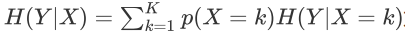
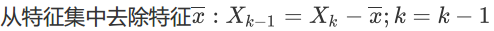

数据预处理 python ：1、read_csv 2、info 3、isnull() 4、 fillna(inplace=True) 5、drop\ 增加、 6、LabelEncoder 7、get_dummies 8、check info
第11讲 特征工程
11.1 什么是特征工程
11.2 一般特征构造和预处理
11.3 特征选择
11.4 过滤(filter)式特征选择方法
11.5 包裹式(Wrapper)特征选择方法
11.6 递归逆向特征消除法(RFE)
11.1 什么是特征工程
(1). 特征工程是指将原始数据转换为有效特征，使得模型能更好的表示潜在问题，从而提高模型对不可
见数据的预测准确性
(2). 特征工程研究子问题包括：
- 特征重要性(feature importance)：对特征有用性的评估
- 特征选择(feature selection)：从许多特征到一些有用的特征
- 特征提取(feature extracton)：从原始数据中自动构建新特征
- 特征构造(Feature Construction)： 从原始数据中手工构造新特征 （手工设置一些独热编码等）
(3). 特征工程的迭代过程
- 特征头脑风暴： 真正进入问题，查看大量数据，研究其他问题的特性工程，看看能学到什么
- 特征设计：取决于你的问题，但你可以使用自动特征提取，手工特征构建和两者的混合
- 选择特性：使用不同的特性重要性评分和特性选择方法来为您的模型准备一个或多个“视图”(多组特征的集合)
- 评估模型：使用所选的特征估计模型对不可见数据的准确性
(4). 特征工程的一般例子
- 分解类别属性，如类别特征：颜色，取值为红、蓝和未知（数据类型不能出现在程序中，需转换为如数值型）
- 分解日期-时间，日期-时间包含很多信息，模型很难在其原生形式中利用这些信息，比如2014-09-20T20:45:40Z （类型不合适，方法如：时间差值法、离散法、权重法（差值范围设置权重））
- 重新定义数据单位 您的数据很可能包含数据单位，可以重新构造以更好地显示相关结构。这可能是转换为一个新的单位，或者是将一个速率分解为时间和其它数量组件
11.2 一般特征构造和预处理
(1). 类别型数据(categorical data) 如上述的颜色
- 对类别型数据特征需要区分是名义型(nominal) 还是顺序型(ordinal) , nominal 是无序的, 而ordinal 是有序的（衣服尺码等）
(2). 类别型数据的处理方法
- nominal特征采用独热编码color size price classlabel
- ordinal特征映射为相应的整数
- 对应 nominal 的 class labels（分类标签）, 也需要将其转换为数值表征，记住此时的数值只代表一个类别，并不表征数值关系
(3). 特征标准化(feature scaling)
- Feature Scaling 很容易被遗忘, 虽然在 Decision tree和 random forests 时不用担心这个问题. 但在很多算法和模型下都是 scaling 后拟合效果更好.
- 两类常用方法: normalization 和 standardization.
- normalization: rescaling to [0,1], 如 min-max scaling
- standardization（更多）: more practical, 因为在一些算法中, weights 初始值都设置为 0, 或者接近 0.
- standardization 之后会更利用更新 weights. 并且 standardize 对 outlier（离群值） 更不敏感，受影响更小
## ex11_1 创建示例数据集
import pandas as pd
df = pd.DataFrame([
['green', 'M', 10.1, 'class1'],
['red', 'L', 13.5, 'class2'],
['blue', 'XL', 15.3, 'class1']],
columns = ['color', 'size', 'price', 'classlabel'])
df.head()
| color | size | price | classlabel | |
|---|---|---|---|---|
| 0 | green | M | 10.1 | class1 |
| 1 | red | L | 13.5 | class2 |
| 2 | blue | XL | 15.3 | class1 |
- color: nominal feature
- size: ordinal feature, XL > L > M
- price: numerical feature
## ex11_2 映射有序特征及还原
import numpy as np
size_mapping = {
'XL': 3,
'L': 2,
'M': 1}
df['size'] = df['size'].map(size_mapping)
df
###分类标签编码
class_mapping = {label:idx for idx, label in enumerate(np.unique(df['classlabel']))}
class_mapping
df['classlabel'] = df['classlabel'].map(class_mapping)
df
###转回
inv_label_mapping = {idx:label for label, idx in class_mapping.items()}
df['classlabel'] = df['classlabel'].map(inv_label_mapping)
df
## # sklearn 中也有相应函数
from sklearn.preprocessing import LabelEncoder
class_le = LabelEncoder()
y = class_le.fit_transform(df['classlabel'].values)
y #
#同样也可以反向转换
class_le.inverse_transform(y)
array(['class1', 'class2', 'class1'], dtype=object)## ex11_3 nominal特征独热编码
## 注意若使用LabelEncoder把nominal特征数值化，会引入特征顺序性
X = df[['color', 'size', 'price']].values
color_le = LabelEncoder()
X[:,0] = color_le.fit_transform(X[:,0])
print(X)
## 独热编码：为名义特征每个唯一值创建一个特征
# ## 方法1
# from sklearn.preprocessing import OneHotEncoder
# ohe = OneHotEncoder(categorical_features=[0], sparse=False) #换后的变量在列中的位置,sparse返回常规的Numpy矩阵
# ohe.fit_transform(X)
# 方法2 pandas.get_dummies方法，只转换字符串列
pd.get_dummies(df[['price','color','size']])
## 为减少特征相关性，可以直接删除一个特征列，不会失去重要信息
pd.get_dummies(df[['price','color','size']], drop_first=True)[[1 nan 10.1]
[2 nan 13.5]
[0 nan 15.3]]| price | size | color_green | color_red | |
|---|---|---|---|---|
| 0 | 10.1 | NaN | 1 | 0 |
| 1 | 13.5 | NaN | 0 | 1 |
| 2 | 15.3 | NaN | 0 | 0 |
#ex11_4
import os
import pandas as pd
import numpy as np
os.chdir(r'C:\Users\43790\data file')
df_wine = pd.read_csv('wine.data', header=None)
df_wine.columns = ['Class label', 'Alcohol', 'Malic acid', 'Ash',
'Alcalinity of ash', 'Magnesium', 'Total phenols',
'Flavanoids', 'Nonflavanoid phenols', 'Proanthocyanins',
'Color intensity', 'Hue', 'OD280/OD315 of diluted wines', 'Proline']
print('Class labels', np.unique(df_wine['Class label'])) ## 一共三种已设置的label 1,2,3
df_wine.head()
from sklearn.model_selection import train_test_split
## 数据集和测试集的拆分
X, y = df_wine.iloc[:, 1:].values, df_wine.iloc[:, 0].values
X_train, X_test, y_train, y_test = \
train_test_split(X, y, stratify=y, test_size=0.3, random_state=0) #stratified 切分， 使切分后的数据集更好地保留标签的相对比例
# 两种标准化的方法
# min-max rescaling（0-1标准化）
from sklearn.preprocessing import MinMaxScaler
mms = MinMaxScaler()
X_train_norm = mms.fit_transform(X_train)
X_test_norm = mms.transform(X_test) # 注意测试集是按照训练集的参数进行转换
# standarzation（后面实验用的标准化方法）
from sklearn.preprocessing import StandardScaler
stdsc = StandardScaler()
X_train_std = stdsc.fit_transform(X_train)
X_test_std = stdsc.transform(X_test)
Class labels [1 2 3]# 检验标准化后的均值 (均值为0)
X_train_std.mean(axis=0)array([ 6.89009781e-15, 1.68324136e-16, 3.79965996e-15, 2.85613826e-16,
-3.17846108e-16, 1.66264851e-15, 1.59818395e-16, -1.19886180e-15,
1.88827448e-15, -1.61519543e-15, -5.78390382e-16, 8.63108868e-16,
-1.33405831e-16])# 检验标准化后的方差（方差为1）
X_train_std.std(axis=0)array([1., 1., 1., 1., 1., 1., 1., 1., 1., 1., 1., 1., 1.])# 检验标准化后的均值 （0-1标准化的）
X_train_norm.mean(axis=0)array([0.47472175, 0.31893089, 0.44765971, 0.45169962, 0.35911987,
0.46373749, 0.3637369 , 0.47612903, 0.38635668, 0.29747751,
0.50446122, 0.49426917, 0.3401017 ])11.3 特征选择
（1）. 含义：从给定的特征集合中选择出相关特征子集的过程
（2）. 为什么要做特征选择：
- 减轻维数灾难，在部分特征上构建模型
- 去除不相关特征（与任务无关或冗余特征），降低学习任务的难度
（3）. 特征子集的选择过程
- 特征产生过程( Generation Procedure )
- 产生过程是搜索特征子集的过程，负责为评价函数提供特征子集。
- 评价函数( Evaluation Function )
- 评价函数是评价一个特征子集好坏程度的一个准则。
- 停止准则( Stopping Criterion )
- 停止准则是与评价函数相关的，一般是一个阈值，当评价函数值达到这个阈值后就可停止搜索。
- 验证过程( Validation Procedure )
- 在验证数据集上验证选出来的特征子集的有效性
(4). 搜索子集常用算法
（框中为现常用的算法：启发式的方法）
- 序列前向算法（Sequential Forward Selection， SFS）：特征子集X从空集开始，每次选择一个特征x加入特征子集X，使得特征函数J(X)最优。即每次都选择一个使得评价函数的取值达到最优的特征加入
- 序列后向算法（Sequential Backward Selection， SBS ）：从特征全集O开始，每次从特征集O中剔除一个特征x，使得剔除特征x后评价函数值达到最优
- 双向搜索(Bidirectional Search， BDS )：使用序列前向选择(SFS)从空集开始，同时使用序列后向
- 选择(SBS)从全集开始搜索，当两者搜索到一个相同的特征子集C时停止搜索
(5). 子集评价(subset evaluation)
- 使用某种评价函数对特征子集的优劣进行评估
- 评价函数包括皮尔逊相关系数、信息增益、距离计算模型、模型性能指标Acc, Auc, AIC或BIC等
- 子集评估是一个不断迭代的过程，在对新的特征子集进行评价得到评价值后，增加或减少特征，不能再提高特征子集的评价值则停止
(6). 常用特征选择方法（主要看用前两者）
根据特征子集搜索机制与子集评价机制相结合，可到到特征选择方法。大致分为三类： 过滤式
(filter)、包裹式(wrapper)、嵌入式(embedding)过滤式(filter)
先对数据集进行特征选择，然后再训练学习器，两个过程相互独立
通常需要确定一个特定统计量来衡量特征的重要性
过滤式特征选择的评价统计量如：
(1) 皮尔逊相关系数 判断特征和目标特征之间线性关系的统计量
(2) 信息增益 选择特征X前后，Y的信息熵变化用Y的信息增益表示
其中，为分类变量Y的信息熵，
为对于某特征X的条件信息熵。
假定存在特征子集X1和X2，若 ，则宜选用特征子集X1
包裹式(Wrapper)
- 将特征选择过程与模型训练过程结合，根据特征子集得到的模型性能来评价特征子集
- 每次对特征子集的评价都要重复模型的训练和测试，计算开销大
- 认为学习器是“黑箱”模型，用以评价特征的学习算法很多，对子集的评价标准也很多，如准确率，召回率、AUC、赤池信息准则AIC、贝叶斯信息准则BIC、模型分类错误率等
- 可以得到对模型有提升效果的特征子集，但选择出的特征子集对不同模型不是普遍适用的
- 常用的特征选择方法例如递归特征消除 RFE(Recursive Feature Elimination)[Guyon, I., Weston, J., Barnhill,S., & Vapnik, V., 2002]是一种常用的包裹式特征选择方法。该方法目标是通过不断构建模型递归地删除特征，对特征权重进行排序
- SFS、GA
嵌入式(embedding)
- 将特征选择和模型训练在同一过程中完成，模型训练结束，特征选择也完成
- 与前两种方法（特征选择和学习器训练分开）不同，嵌入式方法在学习器训练过程中进行了特征选择
- 常见的嵌入式特征选择方法包括： L1正则化(LASSO)和基于树的模型（决策树、随机森林等）
11.4 sklearn中过滤(filter)式特征选择方法
(1). 选择特性的最简单方法是使用单变量统计( Univariate statistics)，即分别查看每个特征并检验统计
指标，以查看它是否与预测目标相关
(2). sklearn 中可以用到的 Univariate statistics 有：
- 回归问题: f_regression
- 分类问题: chi2 （卡方）or f_classif
(3). 得到统计量和 p 值之后，sklearn 又配套了不同的选择方法
- SelectKBest 除去k个得分最高的特征之外的所有特征
- SelectPercentile 删除除用户指定的最高评分百分比外的所有特征
- 对每个特征使用通用的单变量统计检验 SelectFpr,false discovery rate SelectFdr, or family wise error SelectFwe.
- GenericUnivariateSelect 允许使用可配置的策略执行单变量特性选择。这允许选择最好的单变量选择策略与超参数搜索估计
## ex11_5 过滤式
# 以 chi2 和 SelectKbest 为例（选择k个最好特征来进行最好选择）
from sklearn.feature_selection import chi2
from sklearn.feature_selection import SelectKBest
select = SelectKBest(chi2, k=6)
X_uni_selected = select.fit_transform(X_train, y_train)
print(X_train_std.shape)
print(X_uni_selected.shape)
## 可视化
import matplotlib.pyplot as plt
%matplotlib inline
# 查看选出了哪几个 feature, 黑色是选出来的 （13个中选出了6个）
mask = select.get_support()
print(mask)
# visualize the mask. black is True, white is False
plt.matshow(mask.reshape(1, -1), cmap='gray_r')
(124, 13)
(124, 6)
[False True False True True False True False False True False False
True]
<matplotlib.image.AxesImage at 0x2884b6558c8>11.5 包裹式(Wrapper)特征选择方法
(1). 序列前向算法（Sequential Forward Selection， SFS）或序列后向算法（Sequential Backward
Selection， SBS ）都是属于贪婪搜索算法，目的是根据分类器的性能来降低初始特征子空间的维
数，从而提高计算效率。SBS是经典的特征选择算法。
(2). 算法逻辑
- 顺序地从完整的特征子集移除特征，直到新特征子空间包含需要的特征数量
- 为了确定每个阶段要删除哪些特征，需要定义评价函数 ，一般为分类器在去除特定特征前后的性能差异
- 每个阶段要删除的特征为该标准值最大的特征
(3). 算法步骤
- 用k=d初始化算法， d为特征空间xd 的维数
- x满足评价函数最大值
- 
- 如果k等于期望的特征数则停止；否则转往步骤2
## ex11_6
from sklearn.base import clone
from itertools import combinations
import numpy as np
from sklearn.metrics import accuracy_score
from sklearn.model_selection import train_test_split
class SBS():
'''
k_features: 想要返回的理想特征数，estimator为分类器，scoring为评价函数
'''
def __init__(self, estimator, k_features,scoring=accuracy_score,test_size=0.25, random_state=1):
self.scoring = scoring
self.estimator = clone(estimator) #深复制，生成一个新的分类器，否则将继续上一个分类器进行迭代，容易出现问题
self.k_features = k_features
self.test_size = test_size
self.random_state = random_state
def fit(self, X, y): ##选择
X_train, X_test, y_train, y_test = train_test_split(X, y,test_size=self.test_size,random_state=self.random_state)
dim = X_train.shape[1] #维度
self.indices_ = tuple(range(dim)) #索引
self.subsets_ = [self.indices_]
score = self._calc_score(X_train, y_train,X_test, y_test, self.indices_)
self.scores_ = [score]
##以上为未进行特征选择之前的表现情况
while dim > self.k_features: #进行特征选择
scores = []
subsets = []
for p in combinations(self.indices_, r=dim-1): ##利用combinations函数选择减少一个特征后的集合，得到新的集合的索引进行操作。
score = self._calc_score(X_train, y_train,X_test, y_test, p)
scores.append(score)
subsets.append(p)
best = np.argmax(scores) #选择最优
self.indices_ = subsets[best] #取出索引
self.subsets_.append(self.indices_) #添加最优的索引
dim-=1
self.scores_.append(scores[best])
self.k_score_ = self.scores_[-1]
return self
def transform(self, X): #取出最好的特征子集的索引
return X[:, self.indices_]
def _calc_score(self, X_train, y_train, X_test, y_test, indices): ##预测打分
self.estimator.fit(X_train[:, indices], y_train)
y_pred = self.estimator.predict(X_test[:, indices])
score = self.scoring(y_test, y_pred)
return score
## 使用SVM分类器实现SBS实例
import matplotlib.pyplot as plt
from sklearn.svm import SVC
svm = SVC(kernel='linear', C=1.0, random_state=0) #线性的支持向量机
svm.fit(X_train_std, y_train) #拟合标准化之后的训练集
sbs = SBS(svm, k_features=1) #使用SBS方法生成实例化对象后进一步拟合我们的训练集
sbs.fit(X_train_std, y_train)<__main__.SBS at 0x2884b6aeec8>## 绘制验证数据集上计算的svm分类器的分类准确度
k_feat = [len(k) for k in sbs.subsets_]
plt.plot(k_feat, sbs.scores_, marker='o')
plt.ylim([0.7, 1.02])
plt.ylabel('Accuracy')
plt.xlabel('Number of features')
plt.grid()
plt.show()
当分类器的准确度达到100%时，特征数分别为k={6,7,8,9,10,11,12}
## 看最优特征子集
k6 = list(sbs.subsets_[7])
print(df_wine.columns[1:][k6])Index(['Alcohol', 'Malic acid', 'Ash', 'Alcalinity of ash', 'Flavanoids',
'OD280/OD315 of diluted wines'],
dtype='object')### 评估在原始测试集上的性能
svm.fit(X_train_std, y_train)
print('Training accuracy:', svm.score(X_train_std, y_train))
print('Test accuracy:', svm.score(X_test_std, y_test))Training accuracy: 1.0
Test accuracy: 1.0svm.fit(X_train_std[:,k6], y_train)
print('Training accuracy:', svm.score(X_train_std[:, k6], y_train))
print('Test accuracy:', svm.score(X_test_std[:, k6], y_test))Training accuracy: 0.9838709677419355
Test accuracy: 0.9444444444444444上述分析表明：
- 如果采用少于1/2的原始特征，测试集的预测准确度略有下降（可接受）。由于是小数据集，容易受到随机性
的影响 - 特征选择之后的所提供的特征信息并不比原始数据集少，缩小了数据集的规模
- 得到了更简单的模型，提高了模型解释性
11.6 递归逆向特征消除法(RFE)
（1）. 给定一个给特征赋予权重的外部估计量(例如，一个线性模型的系数)，递归特征消除(RFE)是通过递
归地考虑越来越小的特征集来选择特征
- 首先，对学习器进行初始特征集的训练，并为每个特征分配权重
- 然后，从当前集合特征中去除绝对权重最小的特征
- 该过程不断重复，直到最终达到所需的要选择的特征数量
## ex11_7 sklearn中的RFE
from sklearn.feature_selection import RFE
from sklearn.svm import SVC
svc = SVC(kernel="linear", C=1) #分类器仍选择线性的支持向量机
rfe = RFE(estimator=svc,n_features_to_select=6, # 要选出几个 feature
step=1) # 每次剔除出几个feature
rfe.fit(X_train_std, y_train)
X_rfe_selected = rfe.transform(X_train_std)
# 查看选出了哪几个 feature
mask = rfe.get_support()
print(mask)
plt.matshow(mask.reshape(1, -1), cmap='gray_r')[ True False False True False False True False False False True True
True]
<matplotlib.image.AxesImage at 0x2884b714e08>print(mask)[ True False False True False False True False False False True True
True]print(df_wine.columns[1:][mask]) ## 此处可以对比看一下SBS 选择出的最优特征子集，不同的选择方法选择出的特征子集可能不同Index(['Alcohol', 'Alcalinity of ash', 'Flavanoids', 'Hue',
'OD280/OD315 of diluted wines', 'Proline'],
dtype='object')svm.fit(X_train_std[:,mask], y_train)
print('Training accuracy:', svm.score(X_train_std[:, mask], y_train))
print('Test accuracy:', svm.score(X_test_std[:, mask], y_test))Training accuracy: 0.9838709677419355
Test accuracy: 0.9814814814814815